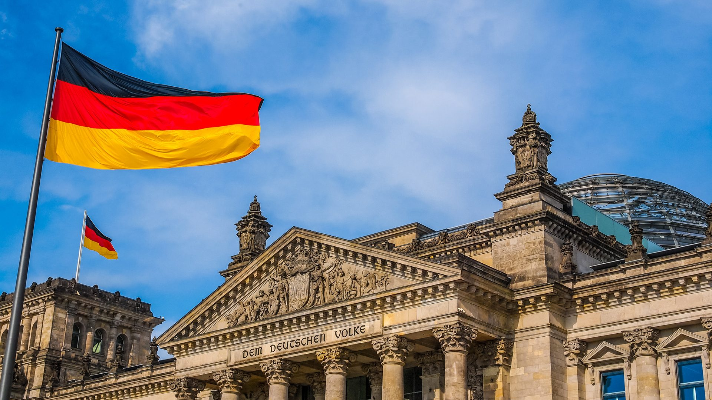

Aluno de TI da Universidade Positivo Realiza Intercâmbio na Alemanha e Destaca Experiência Transformadora

O estudante Willian Marques, do curso de Tecnologia da Informação da Universidade Positivo, acaba de
retornar de um intercâmbio acadêmico na Alemanha, onde passou seis meses estudando na renomada
Universidade Técnica de Munique (TUM). A oportunidade surgiu através de um convênio da Universidade
Positivo com diversas instituições internacionais, permitindo que alunos se aprofundem em suas áreas de
estudo e vivenciem novas culturas.
Tecnologia e Inovação
Durante o intercâmbio, Willian participou de projetos inovadores em colaboração com outros estudantes internacionais. Um dos destaques foi seu envolvimento em um projeto de cibersegurança, que tinha como objetivo desenvolver soluções para proteger dados sensíveis de ataques hackers. "Foi uma experiência desafiadora, mas extremamente gratificante. Trabalhei com tecnologias de ponta e tive a chance de aprender com especialistas renomados", relata.Além disso, Willian também participou de workshops sobre indústria 4.0, uma área de crescente interesse tanto no Brasil quanto na Alemanha, que foca na automação inteligente e na digitalização dos processos industriais.
Cultura e Aprendizado
A experiência de viver em um novo país também proporcionou muitos aprendizados fora da sala de aula. Willian destaca a imersão na cultura alemã e a convivência com pessoas de diferentes nacionalidades. "Foi incrível vivenciar a cultura alemã, desde aprender o idioma até entender as diferenças nas rotinas e costumes. Fiz amizades que vou levar para a vida toda", disse ele.Willian também aproveitou seu tempo livre para explorar o país e conhecer cidades históricas como Berlim, Hamburgo e Frankfurt, além de visitar o famoso Castelo de Neuschwanstein, uma das principais atrações turísticas da Alemanha.
Novas Oportunidades
Agora, de volta ao Brasil, Willian planeja aplicar os conhecimentos adquiridos durante o intercâmbio em projetos acadêmicos e profissionais. Ele acredita que essa experiência abriu novas portas e proporcionou uma visão mais ampla sobre o campo da tecnologia. "Espero poder compartilhar o que aprendi com meus colegas e professores na Universidade Positivo e contribuir para projetos que façam a diferença no mercado de TI brasileiro", finaliza.A Universidade Positivo, por sua vez, reforça a importância de programas de intercâmbio como esse, que ampliam os horizontes dos alunos e os preparam para os desafios de um mercado globalizado. "Incentivamos nossos alunos a aproveitarem essas oportunidades, pois o conhecimento adquirido no exterior é um diferencial significativo para suas carreiras", afirma a coordenação do curso de Tecnologia da Informação.
Para saber mais sobre os programas de intercâmbio da Universidade Positivo, os interessados podem procurar o escritório de relações internacionais da instituição ou acessar o portal acadêmico.